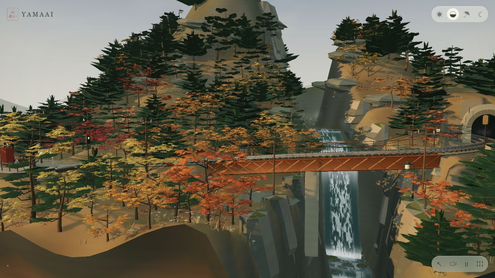

CAPABILITY → DRIVER → RESULT
这个世界，如何被驱动？

本地运行截图 / 1280 × 720 / 2026.09.14 · 标记为分析注释
从零实现这一层
什么会让效果失真
这些能力怎样在一帧内连起来
初始化只做一次：生成几何、创建材质与灯光、缓存线路、预编译 Shader。之后每一帧按下面的顺序驱动。
- 01 · 读取时间计算 dt，更新场景时间
- 02 · 环境插值同步光照、风雨与湿度
- 03 · 更新对象列车状态、建筑灯光、天气
- 04 · 组织视角跟随 / 运镜、地形约束、LOD
- 05 · 绘制画面按需阴影与反射、HDR 与 Bloom
顺序依据 main.js。暂停时场景时间停止，但环境切换与手动观察仍可响应；暂停不等于停止整个渲染循环。
驱动关系
实验可视化计算关系，不调用原作引擎，也不代表原作实时画面或硬件性能。
实现建议
按可验收的阶段，做出相似效果
先让结构和运行成立，再叠加材质、气氛与镜头。
这是本研究提出的实施顺序；不声称这些扩展已由上游实现。阶段之间保留能运行、能验证的版本。